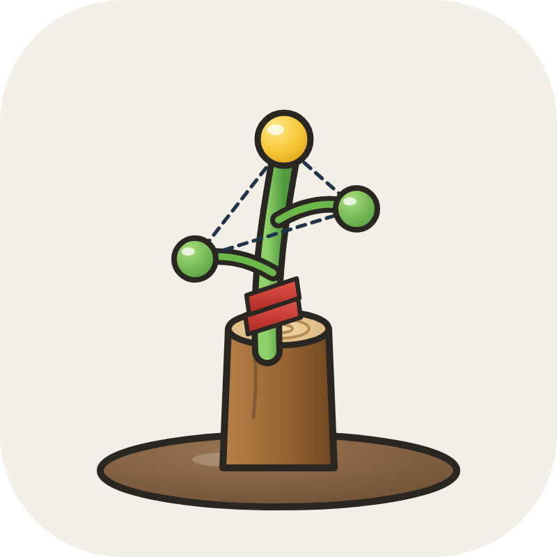

GR
A
FT
graph memory that knows which fact is
newest
MemoryAgentBench
LongMemEval
Qwen3.8-27B
Claude Haiku 5.5
Khaled Abuela
· Nov 2026
I live in Lyon.
MAY 2023
I moved to Toronto.
JULY 2023
Where do I live?
plain memory
Lyon ?
Toronto ?
GRAFT
Lyon
Toronto
WRITE
Chat
Facts
Link
Replace
Graph
READ
Ask
Walk
Newest
Answer
Best
Qwen3.8-27B
48.3%
44.0 no guide
+4.3 guide
FACT WRITER
answers in graph
28
→
44
/ 65
936
80
chats with no facts
Facts edited later
2.3×
10
20
30
0
34.7%
15%
4%
abc
GRAFT
HippoRAG 2
BM25
Variants
Qwen3.8-27B
0
20
40
60
guide
48.3
guide + w. mem.
46.7
no guide
44.0
w. mem., graph
34.0
w. mem., prompt
32.7